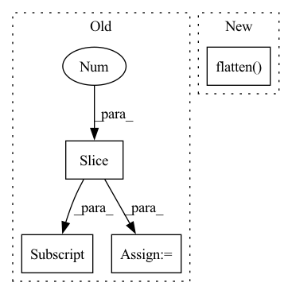

Pattern ID :38182
Before Change
idx = self._get_src_permutation_idx(indices)
target_classes_o = torch.cat([t["labels"][J] for t, (_, J) in zip(targets, indices)])
target_classes = torch.full(src_logits.shape[:2] , 0,
dtype=torch.int64, device=src_logits.device)
target_classes[idx] = target_classes_o
After Change
def loss_class(self, outputs, matches, soft_labels):
assert "pred_logits" in outputs
cls_preds = outputs["pred_logits"].flatten()
cls_labels = matches.flatten() .float()
// Remove non existent classes
valid_ids = (soft_labels.flatten() != -1).nonzero()In pattern: SUPERPATTERN
Frequency: 3
Non-data size: 4
Instances Fragment ID: 109389412
Project Name: bwittmann/transoar
Commit Name: 50cc4661dc99397fe437a829cff6659bfd58eaba
Time: 2022-04-19
Author: bastian.wittmann@tum.de
File Name: transoar/models/criterion.py
M Class Name: TransoarCriterion
N Class Name: TransoarCriterion
M Method Name: loss_class(4)
N Method Name: loss_class(4)
M Parent Class: nn.Module
N Parent Class: nn.Module
M File Name: transoar/models/criterion.py
N File Name: transoar/models/criterion.py
M Start Line: 45
M End Line: 54
N Start Line: 42
N End Line: 48
Before Change
y_true:
unilm式样，需要手动把非seq2seq部分mask掉
"""
y_mask = (y_true[:, 1:] != tokenizer._token_pad_id).long()
y_true = y_true[:, 1:]// 目标token_ids
y_pred = y_pred[:, :-1, :] // 预测序列，错开一位
After Change
y_pred = y_pred[:, :-1, :] // 预测序列，错开一位
y_pred = y_pred.reshape(-1, y_pred.shape[-1])
y_true = y_true.flatten()
return super().forward(y_pred, y_true)
model.compile(loss=CrossEntropyLoss(ignore_index=0), optimizer=optim.Adam(model.parameters(), 1e-5))
Fragment ID: 109389415
Project Name: tongjilibo/bert4torch
Commit Name: c440dc0826c9e401f8d3de3922cfeea3cec1d79e
Time: 2022-12-05
Author: tongjilibo@163.com
File Name: examples/pretrain/gpt_lm_pretrain/pretrain_gpt_lm.py
M Class Name: CrossEntropyLoss
N Class Name: CrossEntropyLoss
M Method Name: forward(3)
N Method Name: forward(3)
M Parent Class: nn.CrossEntropyLoss
N Parent Class: nn.CrossEntropyLoss
M File Name: examples/pretrain/gpt_lm_pretrain/pretrain_gpt_lm.py
N File Name: examples/pretrain/gpt_lm_pretrain/pretrain_gpt_lm.py
M Start Line: 66
M End Line: 71
N Start Line: 66
N End Line: 70
Before Change
src_idx = self._get_src_permutation_idx(indices)
target_classes = torch.full(src_logits.shape[:2] , 0, dtype=torch.int64, device=src_logits.device)
target_classes[src_idx] = 1
loss_ce = F.cross_entropy(src_logits.transpose(1, 2), target_classes, weight=self.cls_weights.cuda(), label_smoothing=0.0)
return loss_ce
After Change
targets dicts must contain the key "labels" containing a tensor of dim [nb_target_boxes]
assert "pred_logits" in outputs
cls_preds = outputs["pred_logits"].flatten()
cls_labels = soft_labels.flatten()
// Remove non existent classes
valid_ids = (cls_labels != -1).nonzero() Fragment ID: 109389417
Project Name: bwittmann/transoar
Commit Name: 09f57bf9bd1146b57db0cce80a0901defe5e5d63
Time: 2022-02-15
Author: bastian.wittmann@tum.de
File Name: transoar/models/criterion.py
M Class Name: TransoarCriterion
N Class Name: TransoarCriterion
M Method Name: loss_class(3)
N Method Name: loss_class(3)
M Parent Class: nn.Module
N Parent Class: nn.Module
M File Name: transoar/models/criterion.py
N File Name: transoar/models/criterion.py
M Start Line: 40
M End Line: 47
N Start Line: 41
N End Line: 47